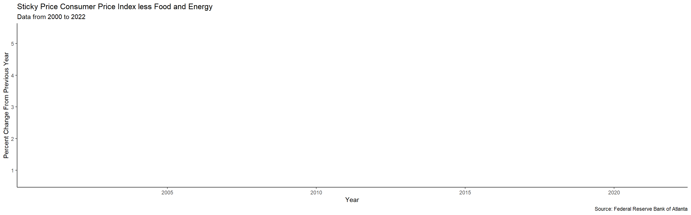

Vibes-Based Economics
1 Something Isn’t Right
(USBLS) and comparatively decent jobs remain available, half the country seems to think that we are back in 2008. Hell, unemployment is back to pre-pandemic levels (USBLS), with long-term unemployment (27 weeks or more) falling as well, and the federal funds rate, while rising steeply, just hit what it was around this same time in 2019 (FRED). It is not like nothing is going on, though, something must be off for people to be so concerned, so what is it? Prices. That is it, or a lot of it. The confluence of ongoing supply chain issues, a war in one of the most vital exporting countries in the grain market (WSJ) instigated by an important export country in the natural gas market, greed, and yes, to an extent the rapid expansion of the money supply from government assistance during the pandemic has worked out to a sharp rise in prices across the board. Is this concerning? Absolutely. Is this a recession? No. So why do I keep hearing the word?
2 Ignoring the Data
In 2020 a global pandemic threw the global economy for a loop. Industries whose work could not easily be transferred online declined and millions of people were suddenly unemployed, and no one was sure when exactly things would end. Two years later and the pandemic is still close to us. Some of those millions who were unemployed, and many others, are dead now. But one could be forgiven for mistaking that things had passed with how little care many seem to have anymore. This general sense of apathy, or at least conscious ignorance, has grown so bad in fact that there is already some whole new pandemic and I have yet to hear a single real person share much concern over it. No one wants to care about anymore, and the governments of the world—which had at one time thrown enormous sums of money into the void which constituted their pandemic economies—have just as quickly dropped all mandates and shoved everyone back to the workplace. On one hand this makes sense, there is a feeling that prior to the pandemic things made some kind of sense and that organizations should return to their state of being. On the other hand, over one million people have died, just in the United States, and many are still dying, and no matter how much we choose to ignore it, things are not just going to become normal.
But what does any of that have to do with our present recessionary woes? A great deal, actually.
The trouble with selectively detaching yourself from the realities before you is that it becomes hard to keep up with everything else. While national economies are no strangers to emotion—look no further than the intense volatility of some stocks to see how impactful feelings can be—the degree to which many are now just going with their guts on this whole thing is almost unprecedented. The stubbornness with which we continue to ignore the presence of a deadly pandemic has made its way into how we think about a great many things. In this case then, “recession” has taken on a whole new meaning, realistically becoming a buzzword for “things are bad and I don’t like it,” or, more appropriately the current “bad vibes.” This situation is articulated well by Felix Salmon and Elizabeth Spiers in a recent episode of the podcast Slate Money;
[Elizabeth Spiers] “I think people conflate their sense of financial security with a sense of overall stability and security in general. So if there is a lot of chaos happening in the world, they will automatically sort of assume that this is affecting them economically, even though it might not be the case.”
Granted many are hit hard by soaring prices for goods but the point stands. A lot is happening, we have gone over this, and emotional overload is both very real and very reasonable given the state of affairs in the past few years but even still what could convince people that things are so unstable? One example could be the rollback of government programs as we reenter our faux normalcy, but the fact is that many of those programs worked in service of businesses more than individual people, at least directly.
3 But the Markets!
Nowhere do we see the presence of this “bad vibes” mentality more than in the stock market, the beating heart of volatility, and more importantly, something often conflated with economic health and well-being. As Felix Salmon says, “The stock market. Your stocks are down. Used to feel wealthy because stocks were up high and rising. Now you feel poor because stocks are lower and falling.” It really is a perfect kind of storm. For many years there has been this beating of the drum to instill the idea that the market and the economy are linked, and to be fair, it is not so much that they are not as it is that that is not the whole story. But nevertheless, people look towards this mythical thing for answers and right now it is not giving particularly good ones. At the same time people are again going with their guts and so there is a combination of feeling bad and then hearing dreadful things from one of the main places you look. This is not to mention how much big words catch headlines so I cannot help but side-eye publishers and agencies for opining the end of prosperity for clicks. The market was also just performing phenomenally while millions were unemployed and starving so again, it is not really reflective of how things are doing.
4 The Near Future
One of the most worrying things about this whole situation though is that, at the end of everything, economic health is genuinely dependent on our deeply personal faith in how things are going. When people lose faith, as many are, that’s when things start to go wrong fast. It is a tough situation because there are significant issues right now facing us down economically—the number of people presently unhoused is growing and rising costs certainly are not helping (Washington Post), and the minimum wage is nowhere near when it needs to be—and they are only magnified by the kind of fear that comes with words like recession. Luckily, the “vibe” has not yet soured enough for people to stop spending, which means that things might just work out if we can get inflation under control.
References
1. Employment Cost Index | June 2022 (USBLS)
2. Employment Situation Summary | June 2022 (USBLS)
3. Federal Funds Target Range - Upper Limit (St. Louis FED)
4. Even With a Ukraine Deal, World Grain Supplies Are Tight (WSJ)
5. Bad Vibes Economics (Slate)
6. Inflation is making homelessness worse (Washington Post)